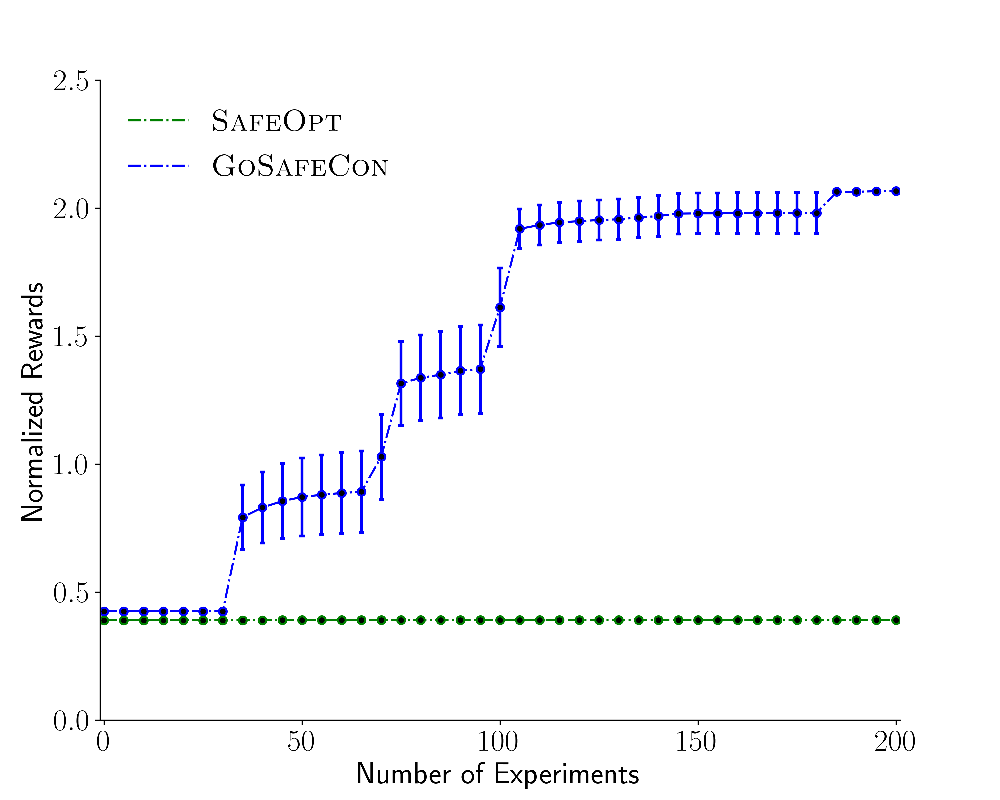
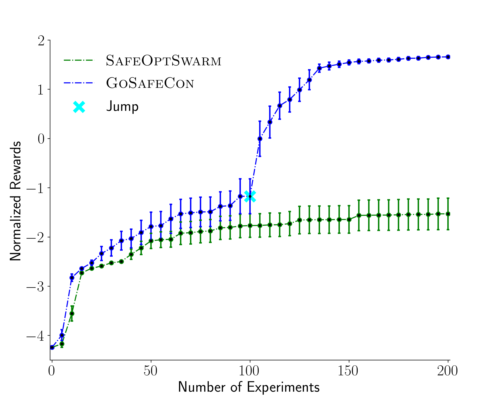

We apply our algorithm to find optimal feedback gain matrix K of a operational space impedance controller for regulation and path following tasks. We perform 200 experiments for each of the tasks over 20 different random seeds.
We use the impedance controller to make the robot reach a desired position which lies close to its initial state. The task consists of a 6D state space and 2D parameter space.
We compare our method Contextual GoSafe with SafeOpt. We observe that the safe sets are disconnected in the parameter space. Hence, SafeOpt could get stuck at a local optima if it is not initialized well.Below is a video of our 8D simulation task.
During our experiments, both approaches provide near 100% safety over the 20 independent runs (99.9% for our method and 100% for SafeOpt). However, as can be seen in figure below, the parameters recommended by our method perform considerably better than SafeOpt. In particular, SafeOpt fails to discover better parameters than our initial policy which is close to the optimum in the connected safe set where SafeOpt is initialized. Our method on the other hand, due to global exploration, can explore more safe regions and thereby also better policies.
We require the controller to follow the desired path as accurately as possible. The task consists of a 7D state space and 4D parameter space.
We compare SafeOptSwarm with our method Contextual GoSafe.
Below is a video of our 11D simulation task.
Both approaches provide 100% safety over the 20 independent run. Our method however is able to discover a better optimum as illustrate in the figure below.
